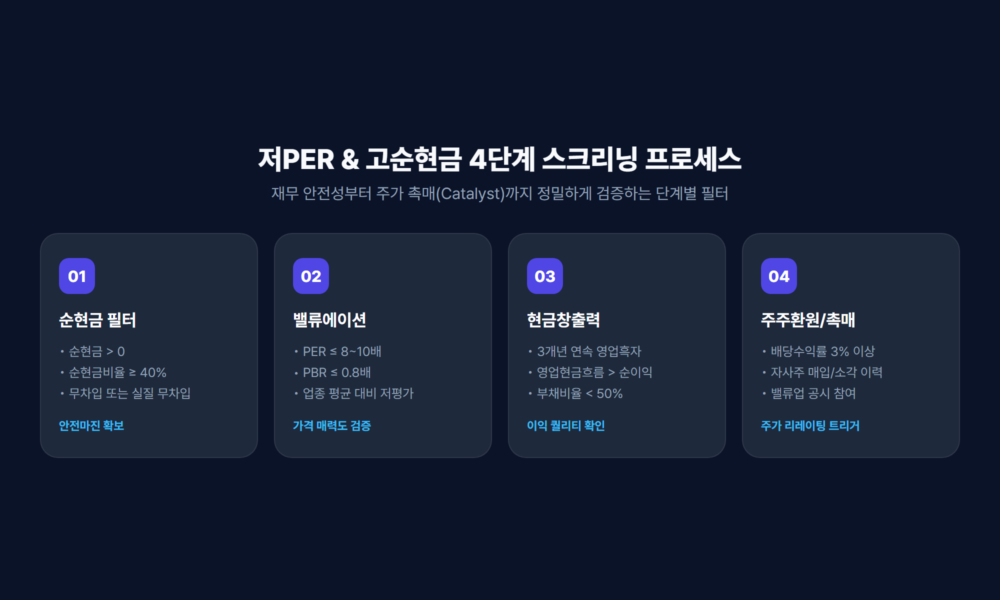
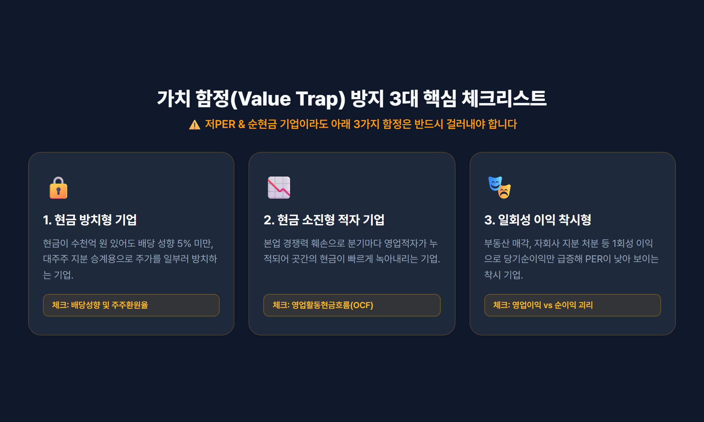

1. 왜 저 PER에 순현금 비율을 결합해야 하는가?
주식 시장에서 단순히 PER(주가수익비율)만 보고 투자했다가 주가가 끝없이 하락하는 이른바 '가치 함정(Value Trap)'에 빠진 경험이 있으신가요?
PER은 기업의 당기순이익 대비 시가총액의 배수를 나타내지만, 기업이 짊어지고 있는 부채와 보유 현금의 질(Quality)을 직접적으로 반영하지 못한다는 결정적인 한계가 있습니다. 예를 들어, PER이 동일하게 8배인 두 기업이 있더라도 A사는 시가총액에 육박하는 막대한 현금을 곳간에 쌓아둔 반면, B사는 막대한 이자 비용이 발생하는 단기 차입금으로 연명하고 있을 수 있습니다.

이러한 왜곡을 완벽히 보완하는 지표가 바로 순현금(Net Cash)과 순현금비율(순현금/시가총액)입니다.
- 안전마진(Margin of Safety) 확보: 시가총액의 50% 이상이 현금으로 채워져 있다면, 주가가 급락하더라도 보유 현금이 강력한 하방 지지선 역할을 합니다.
- 실질 기업가치(EV) 기준 초저평가: 시가총액에서 순현금을 차감한 실질 영업 가치 기준으로 평가할 때, 실질 PER은 3~5배 수준으로 극단적인 저평가 상태에 놓이게 됩니다.
- 금리 변동기 이자수익 방어력: 금리 불확실성 국면에서 부채가 많은 기업은 이자 부담이 급증하지만, 순현금 기업은 막대한 금융 수익을 창출하여 순이익을 방어합니다.
2. 순현금 및 순현금비율의 핵심 계산 공식
순현금 종목을 정확히 스크리닝하기 위해서는 재무상태표(DART 공시) 상에서 다음 항목들을 직접 확인하고 계산할 수 있어야 합니다.
① 순현금(Net Cash) 산출식
순현금 = (현금 및 현금성자산 + 단기금융상품 + 단기기타금융자산) - (총차입금 + 사채 + 유이자부채)② 순현금비율(Net Cash Ratio) 산출식
순현금비율(%) = (순현금 / 시가총액) × 100| 순현금비율 구간 | 밸류에이션 및 재무적 의미 | 투자 전략 관점 |
|---|---|---|
| 30% ~ 50% | 안정적인 현금 완충력 및 우수한 재무 건전성 | 배당 확대 및 신규 투자 여력 충분 |
| 50% ~ 80% | 주가의 절반 이상이 현금성 자산으로 지지됨 | 강력한 하방 경직성 및 안전마진 확보 |
| 100% 초과 | 벤저민 그레이엄식 청산가치형 넷넷(Net-Net) | 기업 매수 후 현금만 회수해도 이익이 남는 극단적 저평가 |
3. 저 PER + 고 순현금 종목 발굴 4단계 스크리닝
실제 HTS 조건검색이나 퀀트 스크리닝 툴(에프앤가이드, 네이버증권, 퀀트킹 등)을 활용해 유망 종목을 추려내는 4단계 실전 필터링 프로세스입니다.

1단계: 순현금 유동성 필터 (재무 안전성)
순현금 > 0(무차입 또는 실질 무차입 기업)순현금비율 ≥ 40%(시가총액 대비 순현금이 40% 이상인 종목)
2단계: 밸류에이션 필터 (가격 매력도)
PER ≤ 8.0 ~ 10.0배(업종 평균 대비 저PER)PBR ≤ 0.8배(보유 순자산 대비 할인 거래)
3단계: 현금 창출력 검증 (이익의 질)
- 최근 3개년 영업이익 연속 흑자 (일시적 적자 기업 배제)
- 영업활동현금흐름(OCF) > 당기순이익 (장부상 이익이 아닌 실제 통장에 현금이 꽂히는 기업)
- 부채비율 50% 이하, 유동비율 200% 이상
4단계: 주주환원 및 주가 촉매(Catalyst) 확인
- 배당수익률 3% 이상 또는 자사주 매입/소각 이력 확인
- 정부/거래소 기업 밸류업 프로그램(Value-up) 공시 및 지배구조 건전성 확인
4. 가치 함정(Value Trap)을 피하는 3가지 체크리스트
저PER과 고순현금 조건을 모두 만족하더라도 다음 3가지 유형에 해당한다면 투자를 피해야 합니다.

- 현금 방치 및 무주주환원 기업 (대주주 사유화 리스크)
현금을 수천억 원 쌓아두고도 배당 성향이 5% 미만이거나, 대주주가 승계나 경영권 방어를 위해 고의로 주가를 억누르는 기업은 피해야 합니다. - 현금 소진(Cash-Burn)형 적자 기업
본업의 경쟁력 상실로 매 분기 영업적자가 지속되어 보유 현금이 빠르게 줄어드는 기업은 안전마진이 소멸될 위험이 있습니다. - 일회성 자산 매각으로 인한 착시 현상
토지, 공장, 지분 매각 등 일회성 영업외수익으로 인해 일시적으로 당기순이익이 급증하여 PER이 낮아진 착시 종목을 필터링해야 합니다.
5. 결론 및 2026년 밸류업 투자 전략 요약
2026년 자본시장의 핵심 화두는 자본 효율성(ROE)과 적극적인 주주환원입니다. 순현금 비중이 높고 저PER 상태인 기업은 다음과 같은 강력한 상승 모멘텀을 보유하고 있습니다.
💡 핵심 요약:
순현금비율이 높은 저PER 기업은 하락장에서는 든든한 방패(안전마진)가 되어주고, 자사주 소각이나 배당 확대와 같은 밸류업 공시가 발표되는 순간 폭발적인 주가 리레이팅(Re-rating)의 기회를 제공합니다.
철저한 4단계 스크리닝과 현금흐름 검증을 통해 시장의 숨은 가치주를 선별해 보시기 바랍니다.